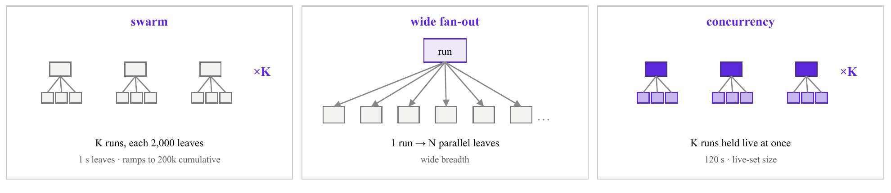
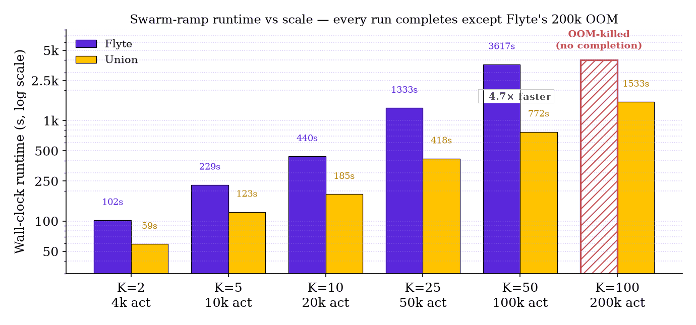
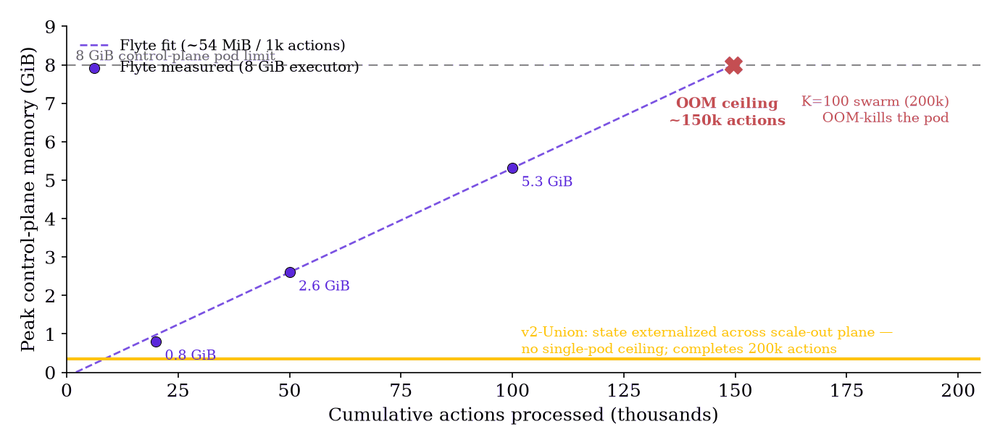
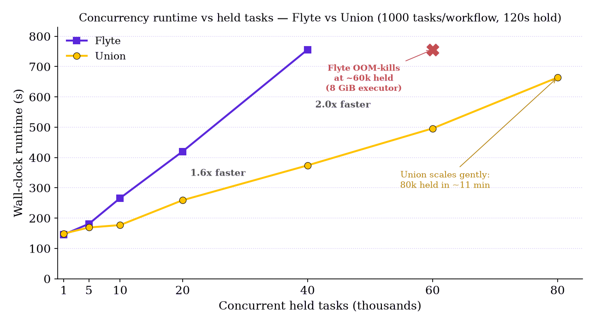
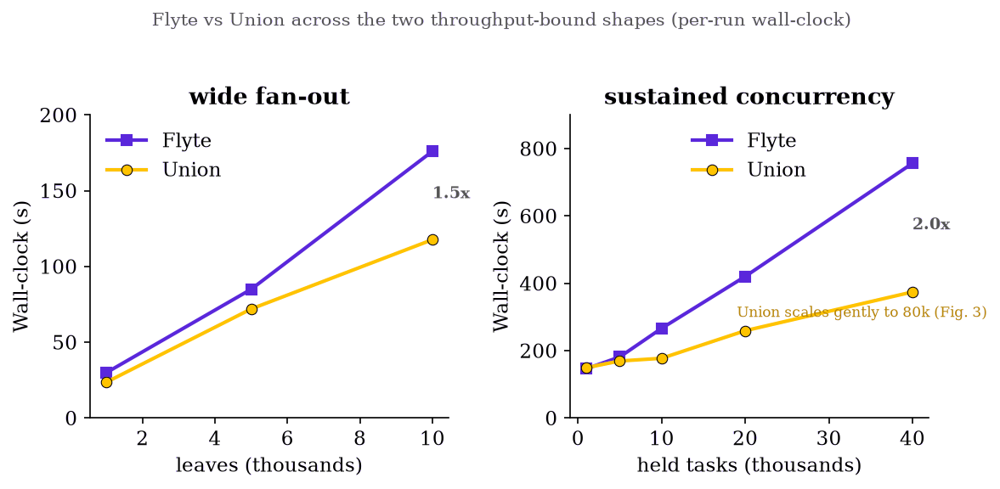

Technical report · Multi-cluster scale-out study · June 2026
Orchestration Without Limits
How Union scales out to run 200,000-action workflows at low latency, where single-cluster OSS Flyte cannot
Abstract
Flyte v2 decomposes a run into many small per-action records rather than one big in-memory object. But v2 itself ships in two very different deployments: the open-source distribution (OSS Flyte), which runs on a single cluster, and the managed offering (Union), which spreads its control and data planes across multiple clusters. Both implement the same per-action model, so we ask: does decomposing a run into actions by itself deliver unbounded scale, or does the architecture still set the ceiling?
We stress both with a swarm: K independent runs fired at once, each a 2,000-wide fan-out, ramped to 100 runs × 2,000 = 200,000 actions. Up to 20,000 actions both planes complete. At 200,000 actions they diverge sharply: Flyte OOM-kills its 8 GiB executor — its footprint tracks cumulative actions processed, not live count, and never releases — while Union completes all 100 runs in ~26 minutes. The result reframes v2’s contribution: per-action decomposition means no single run can OOM the executor, however wide, but the executor still mirrors every live action (a CRD) from etcd into its in-memory informer cache and hits a per-deployment cliff. Union absorbs six-figure action counts by moving that state into a distributed database (ScyllaDB): its leaseworkers hold only the bounded set they are actively leasing and release it on completion, so no single process ever accumulates the whole set. Beyond the reliability ceiling, per-run wall-clock across the throughput-bound shapes shows the scale-out plane wins on both: 1.5× on wide fan-out and 2.0× on sustained concurrency at 40,000 held tasks. Union completes every workload shape at 100% with no runtime failure mode.
Figures

Figure 1. The three workload shapes. swarm fires K independent fan-out runs at once (each a 2,000-wide fan-out, 1 s leaves) and ramps K to drive 200k cumulative actions; wide fan-out is a single run of N parallel leaves (breadth); concurrency holds K runs live at once (1,000 tasks each, 120 s leaves), stressing the live set. The same shapes run on both planes.

Figure 2. Swarm-ramp runtime vs scale (K runs × 2,000 actions; log y). Every run completes on both planes — the only failure across the whole ramp is Flyte OOM-killing its 8 GiB executor at 200,000 actions (hatched, no completion). Below the cliff Flyte runtime climbs steeply (102 s→3,617 s by 100k) while Union scales sub-linearly, 4.7× faster at 100k and the only plane to complete 200k (1,533 s).

Figure 3. Where Flyte breaks: cumulative-churn memory. The executor’s footprint grows linearly with the cumulative actions it has processed (~54 MiB per 1,000, measured at 20k / 50k / 100k) and crosses the 8 GiB limit at ~150k — exactly where the 200k swarm OOM-kills it. Completed actions are never garbage-collected from the informer cache, so memory tracks throughput integrated over time, not any single run’s width. Union keeps action state in ScyllaDB, so no single pod caches the set and there is no ceiling.

Figure 4. Concurrency runtime vs held tasks (K workflows × 1000 tasks each, held 120 s). Flyte’s executor scales sub-linearly (146 s at 1k to 756 s at 40k) then OOM-kills at ~60,000 held tasks, since 60k live actions exceed the pod. Union’s managed scale-out holds 80,000 held tasks flat (~11 min), already 2.0× ahead at 40k. Note this ~60k live-concurrency cliff is lower than the ~150k cumulative bound of Figure 3: held tasks stay resident, so they accumulate faster.

Figure 5. Flyte vs Union across the two throughput-bound shapes (per-run wall-clock). Union wins both: wide fan-out is 1.5× faster at 10,000 leaves (116 s vs 176 s), and sustained concurrency pulls away to 2.0× at 40,000 held tasks. Because ScyllaDB is a low-latency, high-throughput distributed store, action creation and status updates fan out across the leaseworker fleet instead of serializing through one executor’s etcd/informer bottleneck.